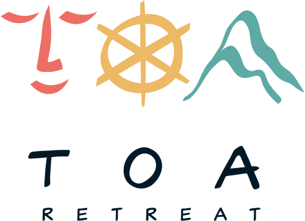

Ziua 01
Plecare in larg
Briefing cu skipperul, ridicam panzele si pornim catre prima ancorare. Pranz la bord, swim stop, navigatie la apus.
- Briefing tehnic & siguranta
- Navigatie activa cu skipperul
- Cina la bord, sub stele

Contact
TOA — Time Off & Awareness. Retreaturi în care navigatia, calatoria si dezvoltarea personala se intalnesc, pentru oameni care spun NU rutinei.
TOA Retreat reuneste oameni care vor mai mult decat o vacanta: experiente in care sportul atipic devine o forma de cunoastere de sine. Navigam, calarim, exploram, dar in primul rand ne intalnim cu noi.
Lucram cu skipperi profesionisti, traineri si neurocercetatori, in locatii alese pe sprancena — de la Marea Egee la Marea Adriatica si dincolo. Fiecare retreat e gandit astfel incat sa aduci acasa nu doar amintiri, ci si o perspectiva noua.

Un retreat compact, gandit pentru profesionistii care simt ca au lasat prea mult din ei la birou. Navigam, respiram, vorbim despre burnout — cu uneltele potrivite, langa oamenii potriviti.
Briefing cu skipperul, ridicam panzele si pornim catre prima ancorare. Pranz la bord, swim stop, navigatie la apus.
O sesiune de patru ore, condusa de un specialist in neurostiinte si performanta. Instrumente practice pentru a-ti reseta ritmul, nu doar weekendul.
Dimineata cu yoga pe punte, urmata de o ultima etapa de navigatie. Inchidem cu un pranz lung, cu vin si cu un cerc de impartasire.
Cabine duble, all inclusive la bord, transferuri din si catre marina.

Construim retreaturi corporate adaptate echipei tale: de la flote de vele in Croatia, la weekenduri de calarie in nordul Romaniei. Lucram cu HR-ul vostru pe obiective concrete: leadership, comunicare, decizie sub presiune.
Avem acces la o flota globala de monocoque si catamarane — de la Baleare si Cyclades, pana la British Virgin Islands si Tahiti. Cu sau fara skipper, cu meniu personalizat, pentru grupuri de 4 pana la 12 persoane.

Sau lasa-ne pe noi sa o alegem, in functie de sezon, vant si vibe-ul echipei.
De la velier sport la catamaran de lux, cu skipper, hostess si chef la bord.
Cu briefing, provizii, traseu, plan B si linistea ca tu doar te urci la bord.
Selectam atent fiecare partener — de la skipperi cu mii de mile in spate, pana la traineri care fac diferenta intr-o singura sedinta.
 "Spunem NU rutinei, deschidem usi spre perspective noi si generam impact autentic."
"Spunem NU rutinei, deschidem usi spre perspective noi si generam impact autentic."
In 2023, Andreea Matache a urcat pe un velier in Croatia fara sa stie ca acea calatorie ii va schimba traiectoria. S-a intors hotarata sa ofere si altora aceeasi tacere, aceeasi claritate.
Astazi, TOA Retreat este un colectiv mic, format din skipperi, traineri si oameni de productie, care construiesc retreaturi cu atentia la detaliu a unui ceasornicar — si cu sufletul unui poet.
Scrie-ne pentru rezervari, oferte corporate sau o discutie despre ce ai in minte. Raspundem in cateva ore.